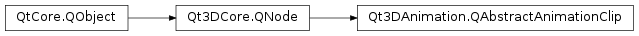

Qt3DAnimation.QAbstractAnimationClip¶
Detailed Description¶
QAbstractAnimationClipis the base class for types providing key frame animation data.To utilise the key frame animation framework in the Qt 3D Animation module the animator component in use needs to be provided with the key frame animation data. The animation data is provided by one of the concrete subclasses of
QAbstractAnimationClip:
Qt3DAnimation.QAnimationClipQt3DAnimation.QAnimationClipLoader
QAnimationClipshould be used when you want to create the animation data programmatically within your application. The actual data is set with aQAnimationClipDatavalue type.If you are loading baked animation data from a file, e.g. as created by an artist, then use the
QAnimationClipLoaderclass and set itssourceproperty.Once the animation clip has been populated with data using the above methods, the read-only duration property will be updated by the Qt 3D Animation backend.
The typical usage of animation clips is:
auto animator = new QClipAnimator(); auto clip = new QAnimationClipLoader(); clip->setSource(QUrl::fromLocalFile("bounce.json")); animator->setClip(clip); animator->setChannelMapper(...); animator->setRunning(true);Animation clips are also used as the leaf node values in animation blend trees:
// Create leaf nodes of blend tree auto slideClipValue = new QClipBlendValue( new QAnimationClipLoader(QUrl::fromLocalFile("slide.json"))); auto bounceClipValue = new QClipBlendValue( new QAnimationClipLoader(QUrl::fromLocalFile("bounce.json"))); // Create blend tree inner node auto additiveNode = new QAdditiveClipBlend(); additiveNode->setBaseClip(slideClipValue); additiveNode->setAdditiveClip(bounceClipValue); additiveNode->setAdditiveFactor(0.5f); // Run the animator auto animator = new QBlendedClipAnimator(); animator->setBlendTree(additiveNode); animator->setChannelMapper(...); animator->setRunning(true);See also
QAnimationClipQAnimationClipLoader
-
PySide2.Qt3DAnimation.Qt3DAnimation.QAbstractAnimationClip.duration()¶ Return type: PySide2.QtCore.float
-
PySide2.Qt3DAnimation.Qt3DAnimation.QAbstractAnimationClip.durationChanged(duration)¶ Parameters: duration – PySide2.QtCore.float
© 2018 The Qt Company Ltd. Documentation contributions included herein are the copyrights of their respective owners. The documentation provided herein is licensed under the terms of the GNU Free Documentation License version 1.3 as published by the Free Software Foundation. Qt and respective logos are trademarks of The Qt Company Ltd. in Finland and/or other countries worldwide. All other trademarks are property of their respective owners.